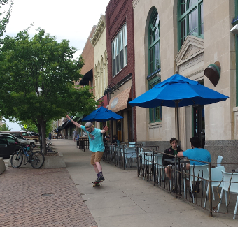

Downtown Lawrence comprises about 20 city blocks between South Park and the Kansas River. This area includes a county courthouse, an art center, a library, the city hall, offices, apartments, and parking lots and attached shops and restaurants with roofs of similar height that could accommodate solar collectors. East of downtown is an 80-block area called East Lawrence. The western half is residential with many small houses and a grade school. The eastern half is industrial, with manufacturing buildings, warehouse and tracks, open parking areas, a rock-crushing plant, and the city's sewage plant.